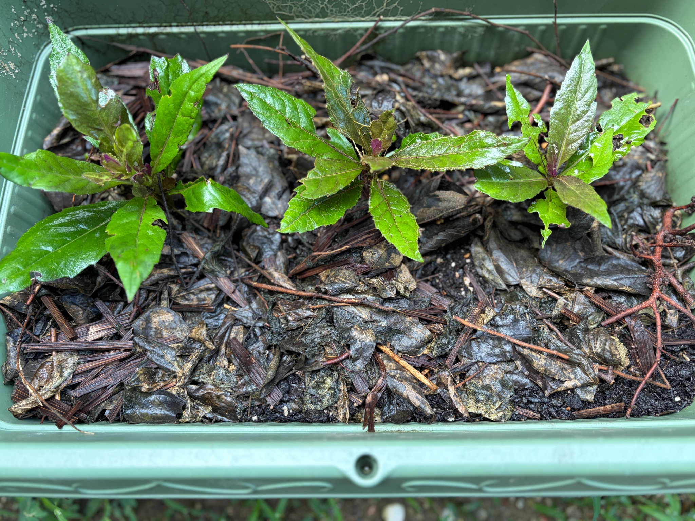

プランターへ植え替えて6日、3本の様子
8月30日に、3号ポットで発根した金時草3本をプランターへ植え替えました。それから6日が経ち、3本とも茎を立て、葉を広げています。
最初から3号ポットで育てていたのは、一番左の苗です。中央と右の2本は、プランターに直接挿した後、しおれ始めたため途中で3号ポットへ移し、生き残った苗です。同じ日にプランターへ植え替えましたが、ここまでの育ち方には違いがあり、現在は左の苗が一番大きく育っています。
8月30日にも3本はそれぞれ葉を広げていましたが、9月5日は、特に左の苗の葉の広がりと葉量が目を引きます。まだ苗と苗の間には土の表面が見えており、プランター全体を覆うほどには茂っていません。
左の苗は、大きな葉を広げている
一番左の苗は、長く伸びた葉を上や左右、手前へ広げています。手前側には幅のある大きな葉が開き、ほかの2本に比べて、株全体にボリュームがあります。
葉の表面には光沢があり、濃い緑色の葉と、明るい緑色の葉が交じっています。大きな葉だけでなく、茎の上部や葉の付け根付近には小さな葉も見られます。葉の大きさがそろっているわけではありませんが、大小の葉が重なり、3本の中で最も葉が充実した姿になっています。
茎や葉の付け根には赤紫色が見え、緑色の葉との色の違いもはっきりしています。最初からポットで育て、8月30日には葉が大きくなっていた苗が、植え替え後も一番大きな姿を保っています。
中央の苗は、細長い葉を放射状に広げる
中央の苗は、茎の先を中心に、細長い葉を放射状に広げています。上向きに伸びる葉のほか、右へ長く伸びる葉、左や手前へ開く葉があり、左の苗とは少し違った姿です。
左の苗ほど葉が密に重なっておらず、一枚一枚の形や葉脈がよく見えます。葉には緑色の部分と、紫色や褐色を帯びた部分が交じり、葉脈に沿った色の違いも見られます。
茎の先には、まだ小さく、十分に開いていない葉がまとまっています。大きな葉には傷みが残っていますが、その間に小さな葉が付いている様子も見られます。途中でポットへ移して残った苗の一つなので、これから葉が広がり、株が充実してくれることを楽しみにしています。
右の苗にも、小さな葉が見られる
右の苗は、上向きに立つ細長い葉と、左右や手前へ広がる葉を付けています。左の苗と比べると葉の広がりは小さく、まだコンパクトな姿です。
上向きの大きな葉はやや紫色を帯び、周囲には明るい緑色の葉が見られます。茎の先付近にも小さな葉があり、大きさや色の異なる葉が集まっています。
右側へ伸びる葉には大きな欠けがあり、葉の形が不ぞろいになっています。それでも茎は立ち、残った葉をそれぞれの方向へ広げています。中央の苗と同じく、途中からポットへ移して生き残った一本として、引き続き成長を見守りたいです。
葉の穴や欠けは残るものの、3本とも葉を保っている
8月30日に見られた葉の穴や縁の欠けは、今回も残っています。左の苗の上向きの葉には穴や茶色く傷んだ部分があり、中央と右の苗にも、葉の縁が欠けたり、ところどころ穴が開いたりしています。
葉の傷みは気になりますが、3本とも株全体がしおれて倒れ込んでいる状態ではありません。茎は立ち、大きな葉と小さな葉を保っています。きれいな葉ばかりではないものの、植え替えた3本がそれぞれの姿で育ち続けていることに、ほっとしています。
葉には水滴が付き、表面がつややかに見えます。株元の土や、その上にある落ち葉なども湿った様子です。今のところ、花や蕾は見当たらず、葉と茎の成長を見守る段階です。
3本の育ち方の違いを、これからも見守る
最初からポットで育てた左の苗と、途中でポットへ移した中央・右の苗では、現在の大きさや葉量に違いが見られます。左の苗が最も大きく育つ一方、残りの2本も葉を保ち、小さな葉を付けています。
一度はプランターへ直接挿した苗がすべて枯れてしまいましたが、ポットで育った苗と、途中で移して生き残った苗を、こうして再びプランターで育てられています。まずはこの3本を大切にしながら、小さな葉がどのくらい広がるか、枝が伸びて葉量が増えていくかを、引き続き記録していきたいです。
